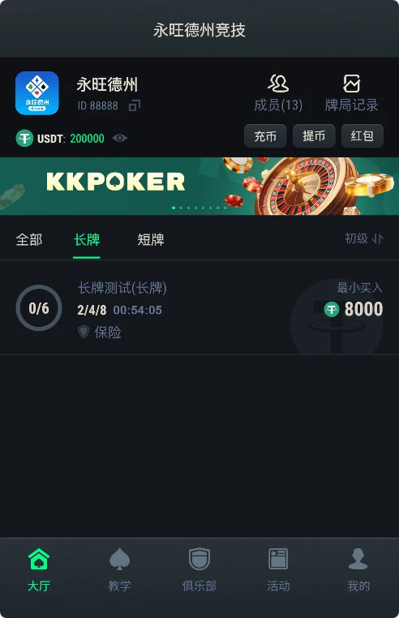
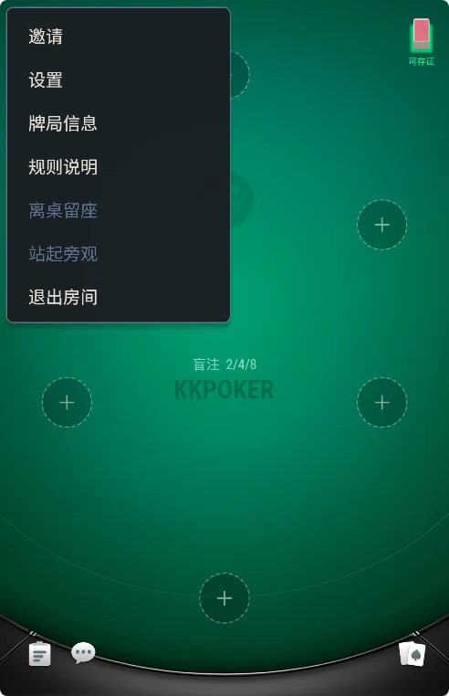
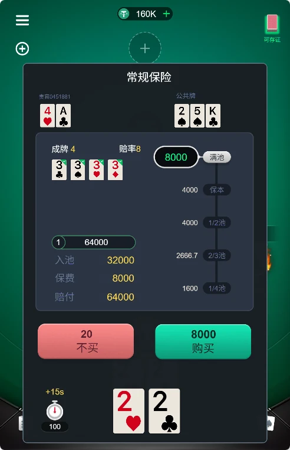

YONGWANG POKER PROJECT
永旺德州原始碼專案資料
以倉庫現有截圖與公開程式碼為依據，查看長牌、短牌、俱樂部、房間、保險與牌局紀錄範圍。

實際產品流程

德州牌桌

房間介面

保險介面
公開範圍
目前可確認 JavaScript 用戶端與 Lua 後端部分模組；不能僅憑截圖確認完整後台、資料庫、一鍵部署或品牌權利。
以倉庫現有截圖與公開程式碼為依據，查看長牌、短牌、俱樂部、房間、保險與牌局紀錄範圍。



目前可確認 JavaScript 用戶端與 Lua 後端部分模組；不能僅憑截圖確認完整後台、資料庫、一鍵部署或品牌權利。